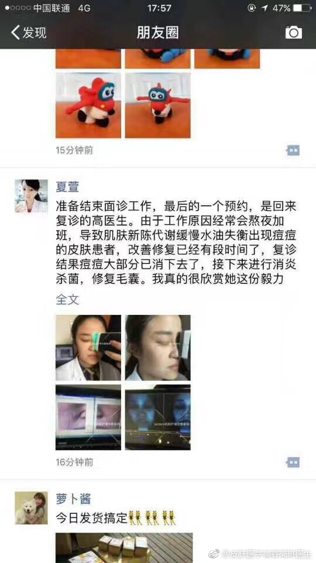
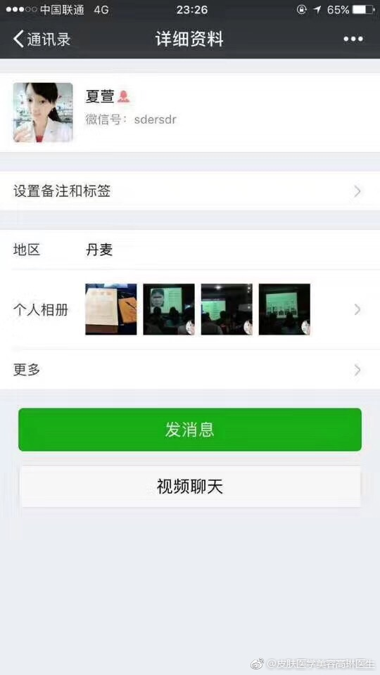
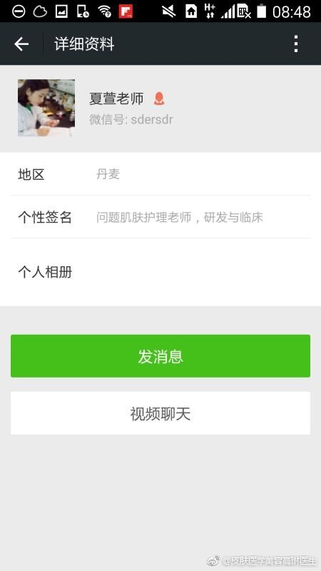
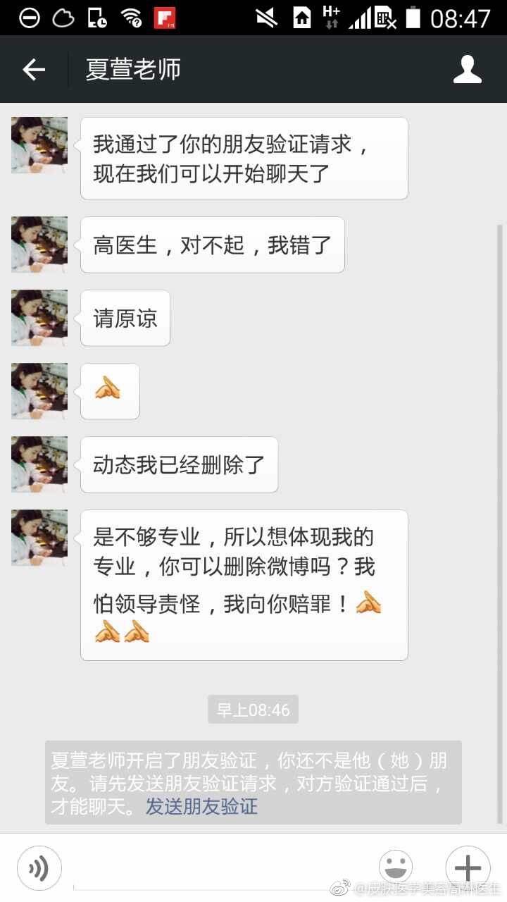

连锁反应真是很麻烦：因为季节加工作忙乱，感冒了；感冒卧床两天，再站起来发现腿瘸了，活动了几天才好；精神不好吃饭对付没规律，胃开始疼起来；今天北京雾霾，我已非常小心，室内也戴着口罩，要是过敏性鼻炎再找来的话，那真是会了无生趣。现在头疼的是不知道这种连锁反应怎么破解，以及下一个连锁反应什么时候发生。
//@黄勇刚：不仅疾病，大部分问题都是互锁的。所以对策也都是组合的，需要一个模型指导行动啊。@Ada李力:连锁反应真是很麻烦：因为季节加工作忙乱，感冒了；感冒卧床两天，再站起来发现腿瘸了，活动了几天才好；精神不好吃饭对付没规律，胃开始疼起来；今天北京雾霾，我已非常小心，室内也戴着口罩，要是过敏性鼻炎再找来的话，那真是会了无生趣。现在头疼的是不知道这种连锁反应怎么破解，以及下一个连锁反应什么时候发生。
不能原谅，1，这个冒用别人照片的人是否医生，尚不确定。2，即使是医生，也属于败类，只会让其它合规医生更加难做。- 老夫子都说过，以德报怨，何以报德？对败类就不能姑息。@高姐_DG:冒用我本人照片做她自己的广告，让我对这位医者万分愤怒，正在走法律程序，她又发来如此短信，突然不知道如何是好？原谅还是不可原谅，刚刚当医生老师就说，医生要有高贵的品质！可是目前她也是医生，面对一句对不起，该怎么回应呢？我算不算被道德绑架了的人呢？我是否因此就删除微博呢？🙃@尹锐---皮肤科教授 @医生王进胜 @皮肤科医学美容许莎 @粉熊的微博 @皮肤医生简丹 @爱美医生 @爱问医生科普 @Doctor王延婷_891 西安·西安站